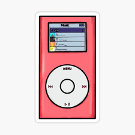

My name is Angelica Brandi and I am an 18-year-old girl who grew up in a very small town, Cranford, New Jersey. Although my parents are divorced, I grew up with my loving family, extended and immediate, who supported me through everything. Without my family and friends, I would deffinitely not be where I am today, persuing my dreams. Currently, I am attending the University of Pittsburgh, in their world class School of Nursing (ranked 4th in the nation). After college, I plan on continuing my career in nursing by working simulatneously as a graduate student and am emergency room nurse, with the goal to become a nurse anesthetist or a nurse practitioner.
In my Seminar in Compsition class, a general education course, the students were asked by their professor Dr. Steven LeMieux to pick an artifact related to computing and write an encomium or innvective. I decided to write an encomium praising her artifcat: the Apple iPod Nano. I did this by explaining how the iPod Nano has contibuted to society's music industry and music consumption today. As you will see below, is my encomium, titled "Transforming Music."
In today’s society, music has made an impact on people like nothing else. Music can be used in many ways, such as for healing purposes, relaxation, or entertainment: it is everywhere. However, the music industry and music consumption would not be where it is today if it were not for the Apple iPod Nano. The iPod Nano, a small compact digital music player, was introduced by Apple in 2005. The iPod Nano was the replacement for the original Apple iPod, which became a successful replacement. This new IPod transformation, the iPod Nano, became a revelation for millions of people around the world and for music consumption because of its portability, personalization, and modern-day impact.
The iPod Nano was a part of the new, groundbreaking, technological advancements in the early 2000s because of its portability. Before the iPod Nano, music could be listened to on the go on the radio or on Sony’s Walkman, but the radio was only accessible in a home or vehicle and the Walkman was a clunky portable audio player. The iPod Nano is a pocket friendly device that allows people to listen to music on the go. In comparison to the original iPod Mini, the iPod Nano is 80% smaller in size and 1.5 ounces (about 48 grams) (Frommer). The iPod Nano was so small that you could “[sit] at the back of the classroom listening to music with your friends while you were supposed to be doing math,” and no one would ever know because of how compact it is (Brain). Additionally, the iPod Nano can be used with ease. The simplicity of this device allows for use across many generations. The iPod Nano consisted of a few applications and one dial, which made the device extremely easy to use. This transformed the music industry and overall music consumption because people could now easily listen to music anywhere at any time, since it is right in their pocket.
Another aspect of the iPod Nano that was groundbreaking was the idea of personalization. With this device, for the first time, people were able to personalize music by creating their own playlists and soundtracks. Unlike the radio, where people are limited to specific stations, the iPod Nano carries thousands of songs, specific for its owner. Other than creating playlists on iTunes, the device had other applications that could further personalize the device, such as clock, photos, games, calendar, stopwatch/times, and a screen lock (Frommer). Additionally, Apple allowed for further personalization by introducing colors, such as red, orange, yellow, green, blue, purple, pink, and silver. Originally, when the iPod Nano was first released, it had a price of $249, 4G of storage, and was offered in black or white (Frommer). This element of personalization offered a whole new experience with music: something the music industry has never seen before.
In recent years, the impact of the iPod Nano has been more prevalent than ever before, due to the rise in mental health awareness. The article “How Music Helps People Heal: The Therapeutic Power of Music” by David Victor, Victor goes into detail about how music has a healing power for people, since it can be used as a form of therapy. Scientific studies have shown that “music can reduce stress, anxiety, depression, and even chronic physical pain” by releasing endorphins and dopamine hormones (Victor). Listening to music can be used as a form of self-expression. People can communicate their emotions through several types of music; for example, “listening to uplifting songs or singing along with them can help boost our moods” (Victor). I relate to this completely, as do many other people, because the minute I am feeling down or not feeling like myself, I resort to music: within minutes I feel better. I believe that music would nto have the effect or impact it has today if the iPod Nano was not created. The iPod Nano allowed people to implement music into every moment of their life, giving music a deeper and more emotional meaning.
Therefore, the iPod Nano was a crucial part of the transformation of the music industry, mainly because of its portability and personalization. Although the iPod Nano was discontinued July 27, 2017, it had left a major impact on the music industry. Today, there are many different types of streaming platforms right at our fingertips, such as Apple Music, Pandora, and Spotify, with a $10 monthly subscription payment. Personally, I believe the iPod Nano was the foundation for the music industry we have today. Music plays an exceptional role in people's day-to-day lives. Music is an outlet. No matter the circumstances in a person's life, music will always be there, within reach. I listen to all different genres of music, such as country, pop, R&B, or rap, depending on my mood, which puts my mind at ease. Personally, I do not think the music industry and music consumption would not be where it is today if it were not for Apple's release of the iPod Nano in 2005.
When I was a junior in high school, the year when the college process starts, I was so lost on where to start. I did not know what type of campus I wanted ot how far from home I wanted to be, but what I did know was that I wanted to major in nursing. I began my college searches based off their nursing programs, which lead me to the University of Pittsburgh. Although I did not really want to be in a city, I was blown away with the campus. As for becoming a nursing major, I realized I wanted be a nursing major at a young age because I was inspired by my grandma. When I saw all that my grandma did for me when I was sick, on top of all she does at her job, I knew that is exactly what I wanted to be when I am older.
Aside from school, I have so many hobbies and passions. One of my main hobbies is volleyball. I started playing volleyball in my freshman year of high school, on the junior varsity team. I continued playng volleyball sophomore, junior, and senior year. I also was voted as captain by my teammates senior year. At the University of Pittsburgh, I have been playing intramural volleyball, just for fun, to continue my passion for the sport. Another passion I have is cooking and baking. I love finiding new recipes on TikTok and Food Network! I also love to travel. I have been to Mexico, Domincan Republic, Aruba (my favorite), Puerto Rico, and Turks and Caicos. My goal in life is to travel most of the world!